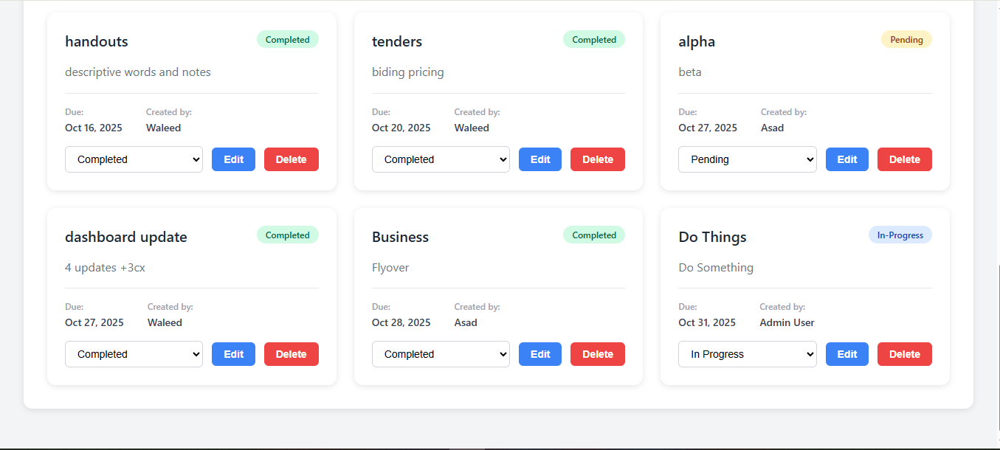

Mini Social Media Platform
Developed using the MERN Stack featuring user profiles, post creation, comments, likes, and a follow/unfollow system. Implemented secure RESTful backend with JWT-based authentication.
Key Features:
- Secure user authentication
- Dynamic post creation and interaction
- Component-based architecture
- Mobile-responsive UI

Project Management System
Trello/Asana-like system with responsive project boards and dynamic task cards. Features include task assignment, real-time updates, and team collaboration.
Key Features:
- Interactive task management
- Dynamic project boards
- Team collaboration features
- Real-time status updates

E-commerce Store
Full-stack store featuring product listings, detailed product pages, shopping cart management, and secure payment workflow integration.
Key Features:
- Seamless product navigation
- Shopping cart & Guest access
- Secure payment integration
- Responsive catalog

Task Management System (RBAC)
MERN Stack application featuring Admin, Manager, and User roles. Uses Role-Based Access Control (RBAC) to enforce permissions and secure route access.
Key Features:
- Multi-role dashboards
- Task filtering & search
- Protected API routes
- Advanced state management
Wireless Electronic Notice Board
Android application (Kotlin) integrated with ASP.NET backend and hardware. Features time-based notice display and role-based access for broadcasting notices.
Key Features:
- Wireless broadcasting
- Real-time synchronization
- Multi-media notice support
- Role-based scheduling
Face Detection System (AI)
Real-time detection system built in Python using OpenCV. Capable of detecting and counting multiple faces accurately in live video streams.
Key Features:
- Live face detection
- Multiple face counting
- Real-time processing
- High accuracy models